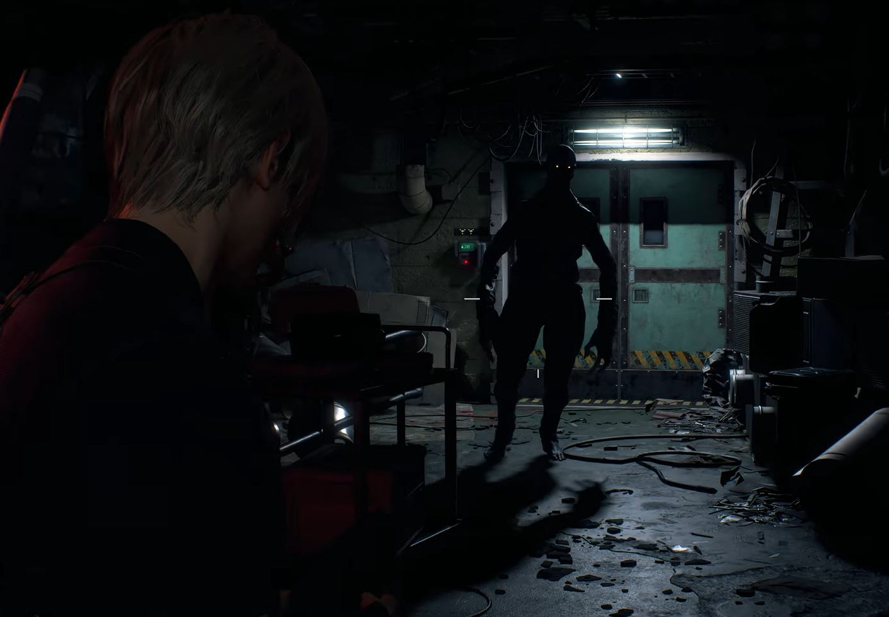

Fãs da franquia Resident Evil receberam agora, para a alegria de todos, uma magnífica reimaginação do quarto jogo da franquia, contanto com diversos conteúdos extras diferentes da versão original, como missões secundárias, por exemplo, e melhorias gráficas já esperadas vinda da RE engine também utilizada nos títulos anteriores da franquia desde o Resident Evil 7.
O jogo foi pela primeira vez apresentado em 3 de junho de 2022, com um pequeno teaser, sem entregar muito do que viria por ai, mas que foi o bastante para deixar os fãs com água na boca, ansiosos pelo que viria por ai, ao mesmo tempo que ficaram preocupados com a possibilidade de se repetir o que ocorreu com o jogo antecessor a ganhar um remake, o Resident evil 3, que sofreu com diversos cortes e teve uma experiência de gameplay reduzida.
Este título não somente recebeu um upgrade em seu visual, como, assim como os anteriores, recebeu uma melhoria gigantesca em sua jogabilidade, não somente isso, a Capcom parece ter ouvido bastante o feedback sobre o jogo anterior e incluiu novos elementos não disponíveis no jogo original, além também de modificar alguns elementos não tão interessantes que haviam anteriormente no jogo.